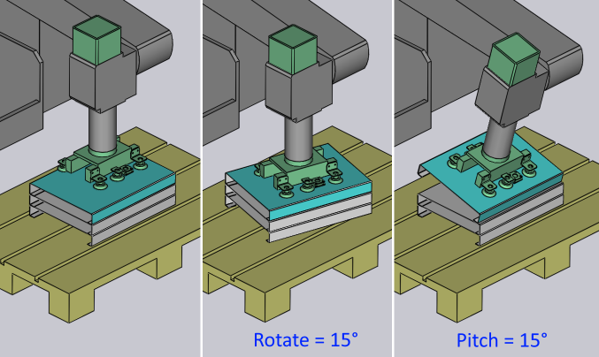

Deposit panel

A Deposit panel kezeli az elsődleges beállításokat az alkatrész raklapra, kosárba vagy szállítószalagra való helyezéséhez. Válassza ki a legmegfelelőbb mintázattípust az adott alkatrészhez. Például a Drop to Basket mintázat csak akkor használható, ha mechanikus fogót használ kis alkatrésszel.
A Deposit panelnek a következő fülei és egyéb opciói vannak:
-
Deposit pozíció (D1, D2,….,Dn)
-
Ismétlődő rács (R)
-
Deposit szekvencia (S)
Az alábbi kép mutatja, hogyan jelennek meg a deposit fülek a hajlítási navigátorban:

Deposit fülek D1 & D2
Több deposit mintázat is elérhető (Simple, Alternating, Weave, Basket stb.). Néhány ilyen mintázat (Alternating, Weave) két különböző orientációban lehelyezett alkatrészt használ. Az orientáció és egyéb beállítások ezekhez az alkatrészekhez a D1 és opcionálisan a D2 füleken szerkeszthetők.
Használja a D1 és D2 füleket az alkatrész deposit beállításainak kezeléséhez az alkatrészek raklapra való lehelyezéséhez.
Rotate és Pitch
A Rotate és Pitch opciók szabályozzák az alkatrész orientációját a lehelyezés pontján. A Rotate beállítás (más néven yaw) a csuklópont helyi vektora körül fordítja az alkatrészt, míg a Pitch tengely a gép Z tengelye körül forgatja az alkatrészt.

Delta Shift
A Delta Shift opció az egymást követő alkatrészek eltolására szolgál a deposit során az alattuk lévő alkatrészhez képest. Látható egy +15 mm-es eltolás az X irányban alább, amelyet az alkatrészek szorosan egymáshoz való stabil rögzítésére használnak.

Height
A Height paraméter szabályozza a magasságot a halom felett, amelyről az alkatrészt elengedik (az alkatrész ekkora távolságot esik, amikor a halomra pihen).
A Deposit panelt az alábbi témákból tárgyaljuk tovább:
Simulate
A szekvencia vagy sorrend, amelyben minden alkatrész a raklapra kerül, megtekinthető a Simulate opció használatával. A rétegek száma és a deposithez használt rács határozza meg, hogy mennyi kerül szimulálásra. Az alkatrész deposit szimulációja megtekinthető a szimuláció csúszka oda-vissza mozgatásával.